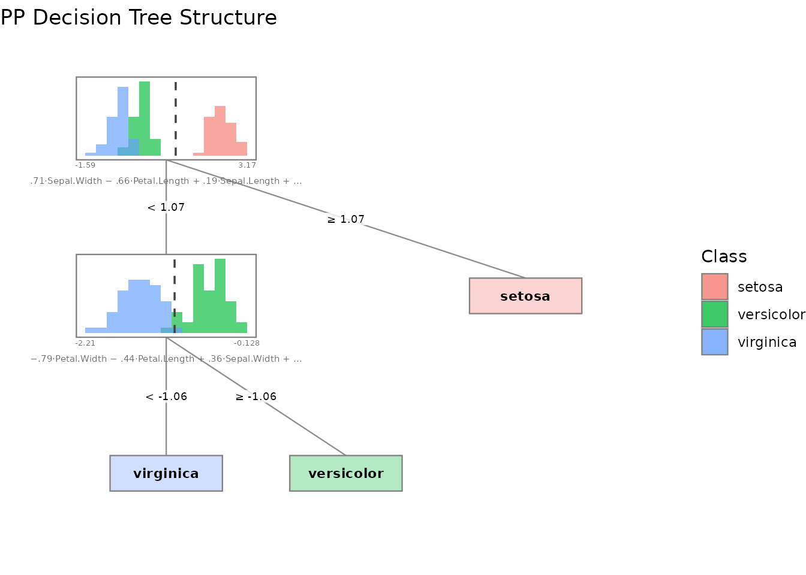
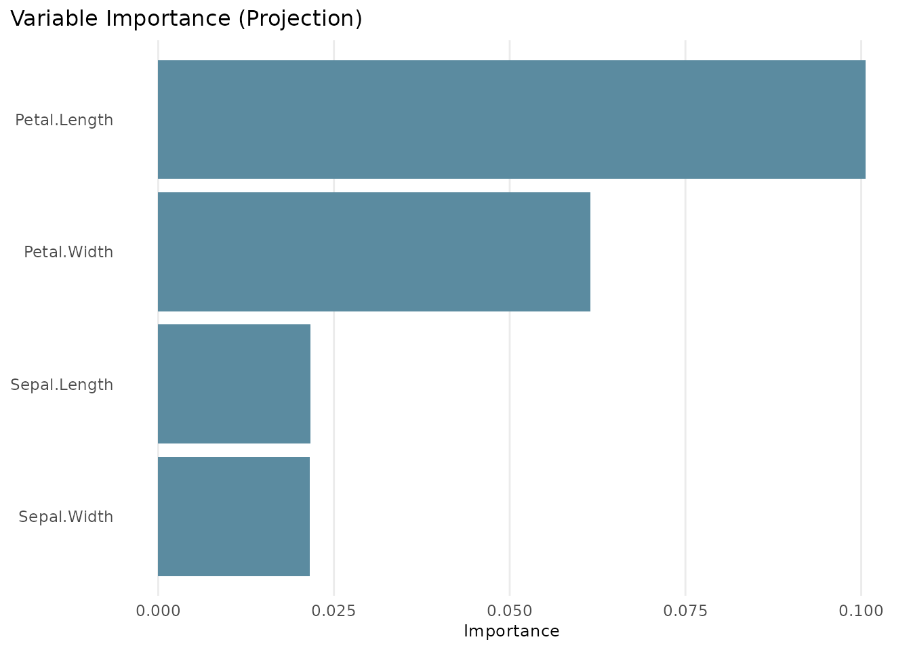
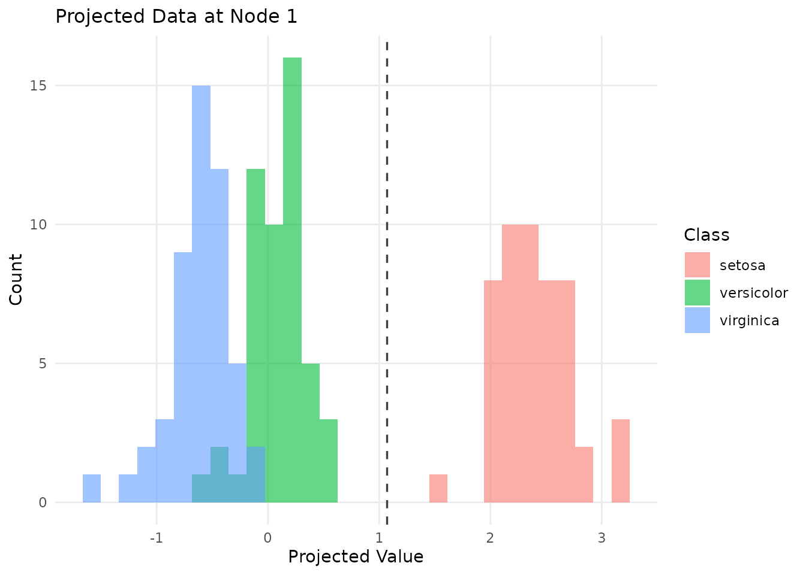
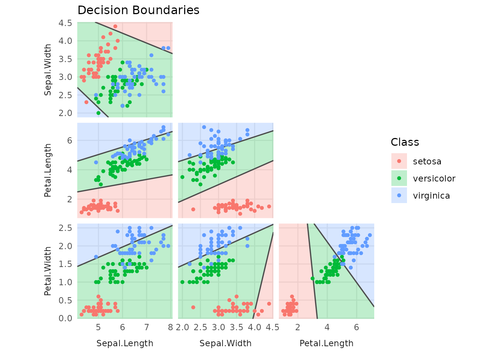
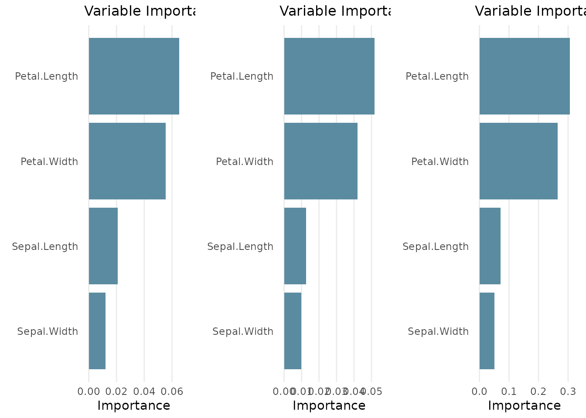
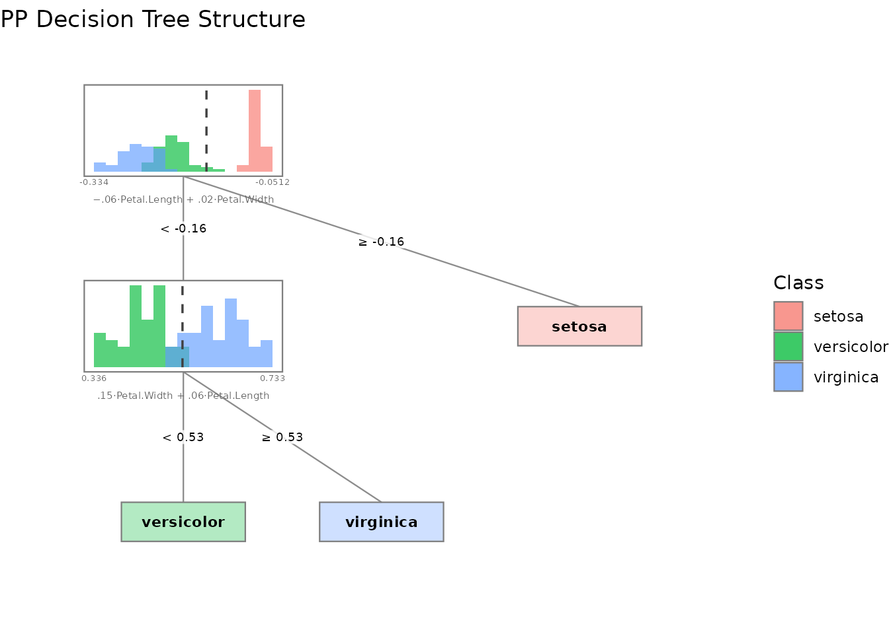

Introduction to ppforest2
introduction.Rmdppforest2 builds oblique decision trees and random forests using projection pursuit. Instead of splitting on a single variable at each node, it finds a linear combination of variables that best separates the classes.
Single tree
Train a projection-pursuit tree on the iris dataset:
library(ppforest2)
#>
#> Attaching package: 'ppforest2'
#> The following object is masked from 'package:datasets':
#>
#> iris
tree <- pptr(Type ~ ., data = iris, seed = 42)
tree
#>
#> Project-Pursuit Oblique Decision Tree:
#> If ([ 0.01 0.04 -0.04 -0.01 ] * x) < 0.06660754:
#> If ([ 0.04 0.07 -0.09 -0.15 ] * x) < -0.2075133:
#> Predict: virginica
#> Else:
#> Predict: versicolor
#> Else:
#> Predict: setosaThe tree splits on linear projections of the features. Use
summary() to see variable importance:
summary(tree)
#>
#> Project-Pursuit Oblique Decision Tree
#> -------------------------------------
#> 150 observations of 4 features
#> Regularization parameter: 0
#> Classes:
#> setosa
#> versicolor
#> virginica
#> Formula:
#> Type ~ Sepal.Length + Sepal.Width + Petal.Length + Petal.Width - 1
#> -------------------------------------
#> Variable Importance:
#>
#> Variable σ Projection
#> 1 Petal.Length 1.7652982 0.10064526
#> 2 Petal.Width 0.7622377 0.06144172
#> 3 Sepal.Length 0.8280661 0.02164980
#> 4 Sepal.Width 0.4358663 0.02155388
#>
#> Note: Variable importance was calculated using scaled coefficients (|a_j| * σ_j).
#> Variable contributions can only be theoretically interpreted as such
#> if the model was trained on scaled data. Scaling also changes the
#> projection-pursuit optimization, which may affect the resulting tree.
#> -------------------------------------
#> Confusion Matrix:
#>
#> Predicted
#> Actual setosa versicolor virginica
#> setosa 50 0 0
#> versicolor 0 48 2
#> virginica 0 1 49
#>
#> Training error: 2%Predict new observations:
Random forest
Train a forest of 100 trees, each considering 2 randomly chosen variables at each split:
forest <- pprf(Type ~ ., data = iris, size = 100, n_vars = 2, seed = 42)
summary(forest)
#>
#> Random Forest of Project-Pursuit Oblique Decision Tree
#> -------------------------------------
#> Size: 100 trees
#> 150 observations of 4 features
#> Regularization parameter: 0
#> Classes:
#> setosa
#> versicolor
#> virginica
#> Formula:
#> Type ~ Sepal.Length + Sepal.Width + Petal.Length + Petal.Width - 1
#> -------------------------------------
#> Variable Importance:
#>
#> Variable σ Projection Weighted Permuted
#> 1 Petal.Length 1.7652982 0.06521309 0.051763665 0.30612773
#> 2 Petal.Width 0.7622377 0.05544892 0.041930512 0.26514626
#> 3 Sepal.Length 0.8280661 0.02084035 0.012679323 0.07176236
#> 4 Sepal.Width 0.4358663 0.01207716 0.009866157 0.05124974
#>
#> Note: Variable importance was calculated using scaled coefficients (|a_j| * σ_j).
#> Variable contributions can only be theoretically interpreted as such
#> if the model was trained on scaled data. Scaling also changes the
#> projection-pursuit optimization, which may affect the resulting tree.
#> -------------------------------------
#> Training Confusion Matrix:
#>
#> Predicted
#> Actual setosa versicolor virginica
#> setosa 50 0 0
#> versicolor 0 48 2
#> virginica 0 4 46
#>
#> Training error: 4%
#> -------------------------------------
#> OOB Confusion Matrix:
#>
#> Predicted
#> Actual setosa versicolor virginica
#> setosa 50 0 0
#> versicolor 0 48 2
#> virginica 0 4 46
#>
#> OOB error: 4%The summary shows the OOB (out-of-bag) error estimate and three variable importance measures:
- Projection: average absolute projection coefficient across all splits
- Weighted: projection importance weighted by the number of observations routed through each node
- Permuted: decrease in OOB accuracy when each variable is permuted
Predict with class probabilities:
probs <- predict(forest, iris[1:5, ], type = "prob")
probs
#> setosa versicolor virginica
#> 1 1 0 0
#> 2 1 0 0
#> 3 1 0 0
#> 4 1 0 0
#> 5 1 0 0Visualization
ppforest2 provides several plot types via plot()
(requires ggplot2):
# Tree structure with projected data histograms at each node
plot(tree, type = "structure")
# Variable importance bar chart
plot(tree, type = "importance")
# Data projected onto the first split's projection vector
plot(tree, type = "projection")
# Decision boundaries for two selected variables
plot(tree, type = "boundaries")
For forests, variable importance is the only global visualization
available. Individual trees can be plotted by specifying a
tree_index.
plot(forest)
plot(forest, type = "structure", tree_index = 1)
Regularization with PDA
Set lambda > 0 to use Penalized Discriminant Analysis
instead of LDA. This can help when features are highly correlated:
tree_pda <- pptr(Type ~ ., data = iris, lambda = 0.5, seed = 42)
summary(tree_pda)
#>
#> Project-Pursuit Oblique Decision Tree
#> -------------------------------------
#> 150 observations of 4 features
#> Regularization parameter: 0.5
#> Classes:
#> setosa
#> versicolor
#> virginica
#> Formula:
#> Type ~ Sepal.Length + Sepal.Width + Petal.Length + Petal.Width - 1
#> -------------------------------------
#> Variable Importance:
#>
#> Variable σ Projection
#> 1 Petal.Width 0.7622377 0.067165621
#> 2 Petal.Length 1.7652982 0.064908713
#> 3 Sepal.Width 0.4358663 0.011343628
#> 4 Sepal.Length 0.8280661 0.001772132
#>
#> Note: Variable importance was calculated using scaled coefficients (|a_j| * σ_j).
#> Variable contributions can only be theoretically interpreted as such
#> if the model was trained on scaled data. Scaling also changes the
#> projection-pursuit optimization, which may affect the resulting tree.
#> -------------------------------------
#> Confusion Matrix:
#>
#> Predicted
#> Actual setosa versicolor virginica
#> setosa 50 0 0
#> versicolor 0 47 3
#> virginica 0 3 47
#>
#> Training error: 4%Tidymodels integration
ppforest2 integrates with the tidymodels ecosystem via parsnip:
library(parsnip)
# Single tree
spec <- pp_tree(penalty = 0.5) |>
set_engine("ppforest2") |>
set_mode("classification")
fit <- spec |> fit(Type ~ ., data = iris)
predict(fit, iris[1:5, ])
#> # A tibble: 5 × 1
#> .pred_class
#> <fct>
#> 1 setosa
#> 2 setosa
#> 3 setosa
#> 4 setosa
#> 5 setosa
# Random forest
spec <- pp_rand_forest(trees = 50, mtry = 2, penalty = 0.5) |>
set_engine("ppforest2") |>
set_mode("classification")
fit <- spec |> fit(Type ~ ., data = iris)
predict(fit, iris[1:5, ], type = "prob")
#> # A tibble: 5 × 3
#> .pred_setosa .pred_versicolor .pred_virginica
#> <dbl> <dbl> <dbl>
#> 1 1 0 0
#> 2 1 0 0
#> 3 1 0 0
#> 4 1 0 0
#> 5 1 0 0